Every route has been personally explored and selected to deliver unforgettable Black Forest experiences.
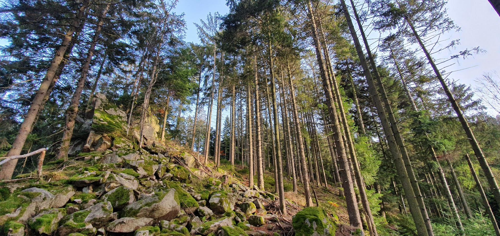
Choose from over 50 carefully selected hiking routes ranging from 5 km to 22 km.
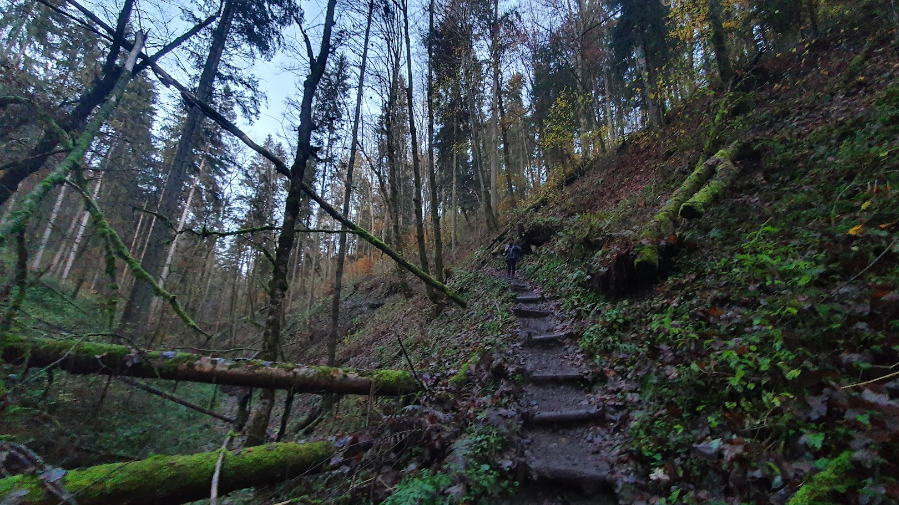
Explore peaceful forest paths away from crowded tourist destinations.
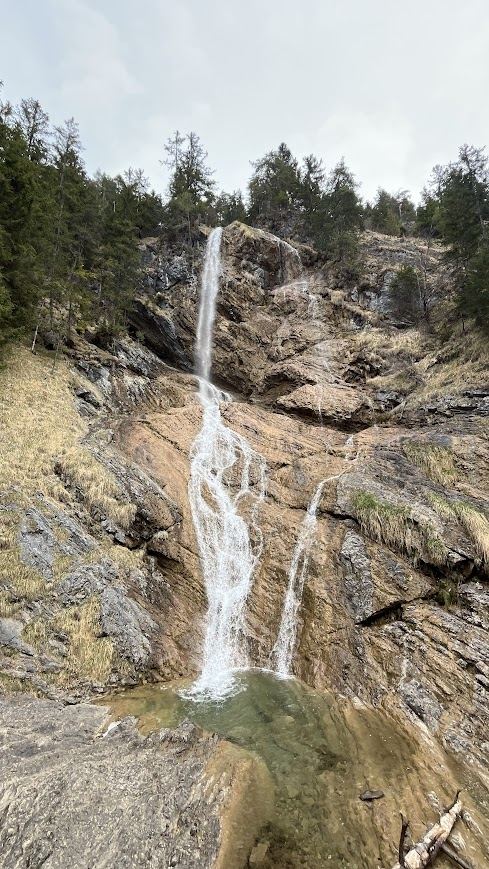
Discover hidden waterfalls, streams and forest creeks throughout the Black Forest.
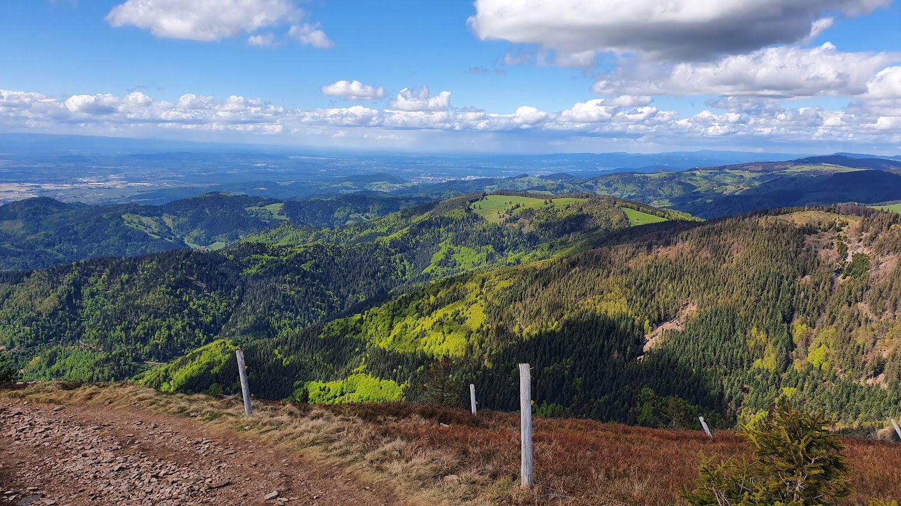
Enjoy breathtaking mountain views and unforgettable photo opportunities.
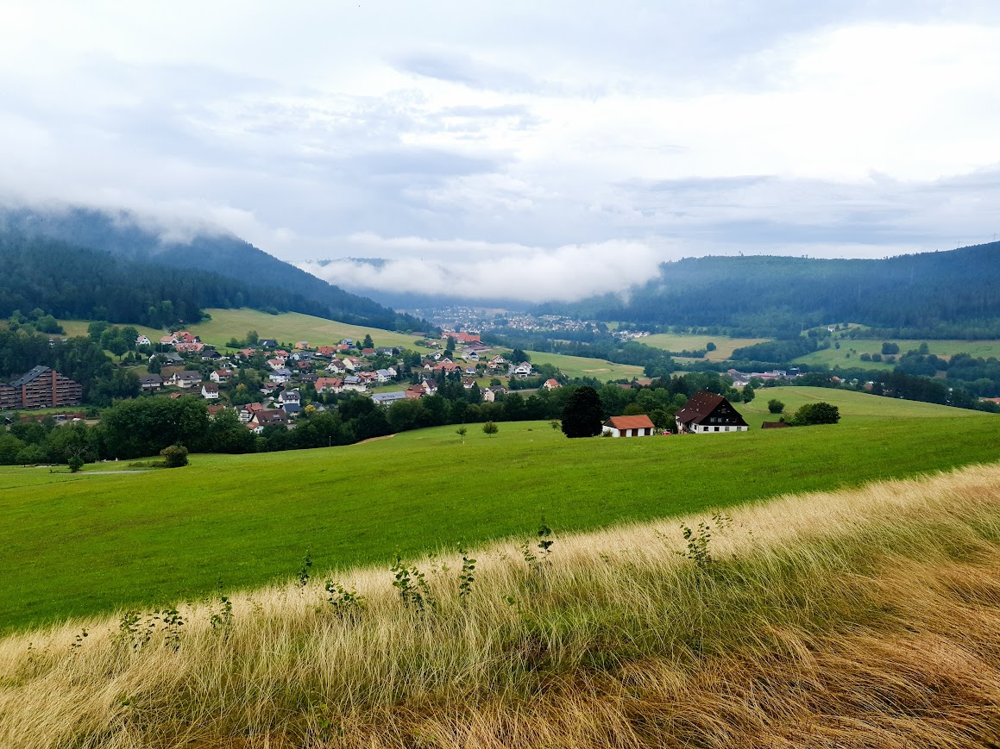
Experience traditional villages and authentic Black Forest hospitality.
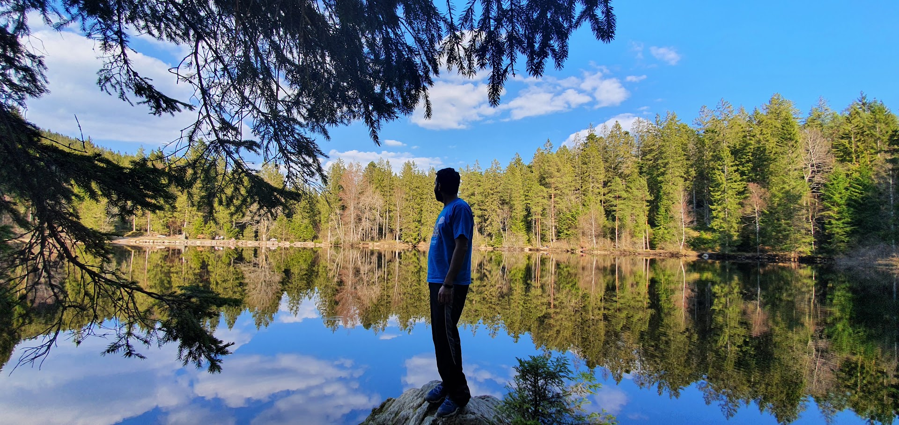
Tours tailored to your interests, fitness level and preferred starting point.
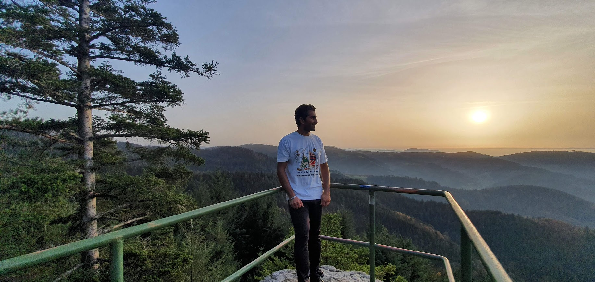
Hi, I'm Deepak, founder of DEETOURS.
Over many years I have explored countless trails throughout the Black Forest, discovering hidden waterfalls, panoramic viewpoints, mountain lakes, remote valleys and scenic forest paths.
What started as a personal passion gradually became a collection of carefully selected hiking routes that I wanted to share with fellow nature lovers.
DEETOURS was created to offer authentic Black Forest experiences beyond the crowded tourist hotspots.
Every route offered by DEETOURS has been personally explored, tested and selected to ensure an unforgettable experience for every guest.
Whether you're looking for a relaxing forest walk or a challenging mountain hike, there is a route for every level.
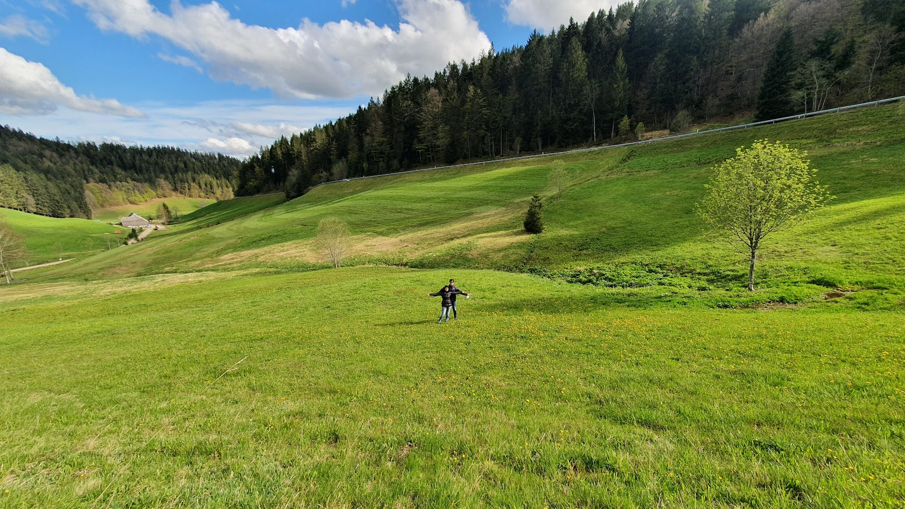
Perfect for casual walkers, families and visitors who want a relaxed day in nature.
The most popular option, combining waterfalls, forests, viewpoints and lakes.
Full-day adventures featuring mountain ridges, panoramic views and demanding terrain.
Every tour is different, but a typical day in the Black Forest often follows this structure.
Meet at any agreed location within the Stuttgart region.
Travel to one of more than 50 carefully selected hiking destinations.
Depending on the selected route, enjoy authentic Black Forest cake at a traditional café or castle bakery.
Explore forests, waterfalls, viewpoints, lakes and meadows.
Finish the day with regional cuisine before heading back.
Relax and enjoy the scenery on the drive back.
A selection of landscapes and locations you may discover during your adventure.
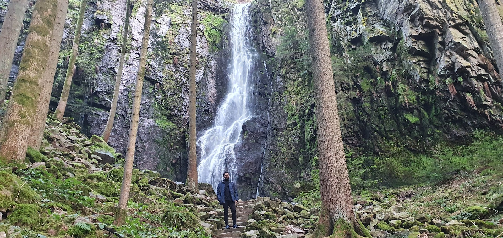
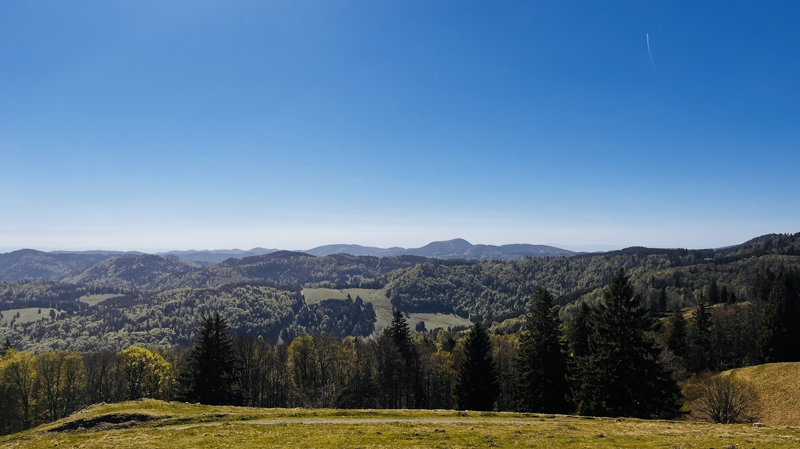
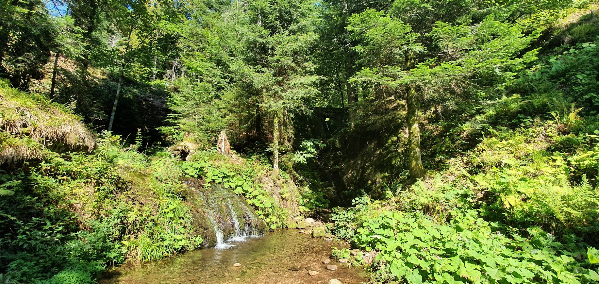
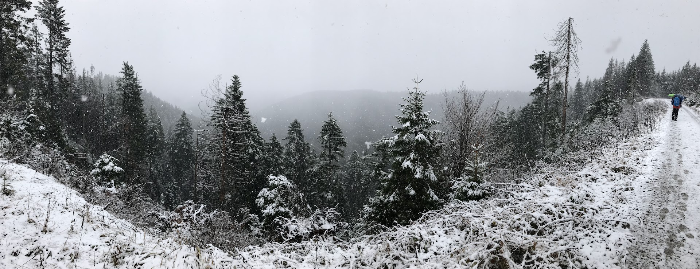
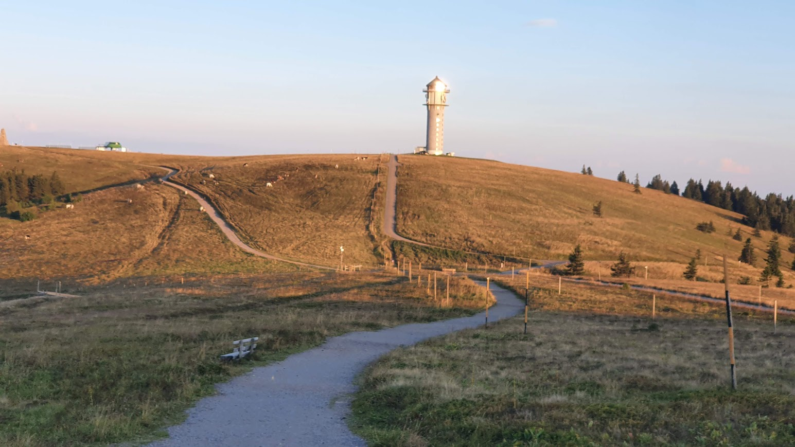
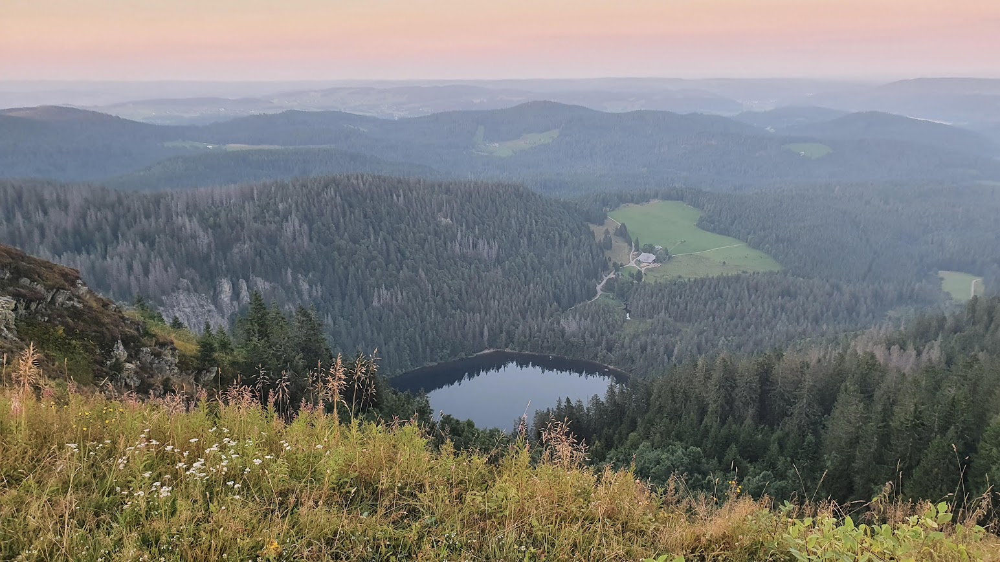
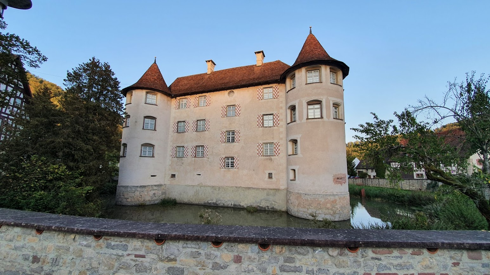
A glimpse of the natural beauty that awaits.